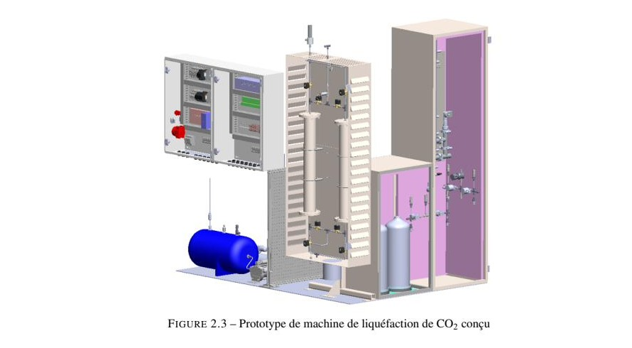
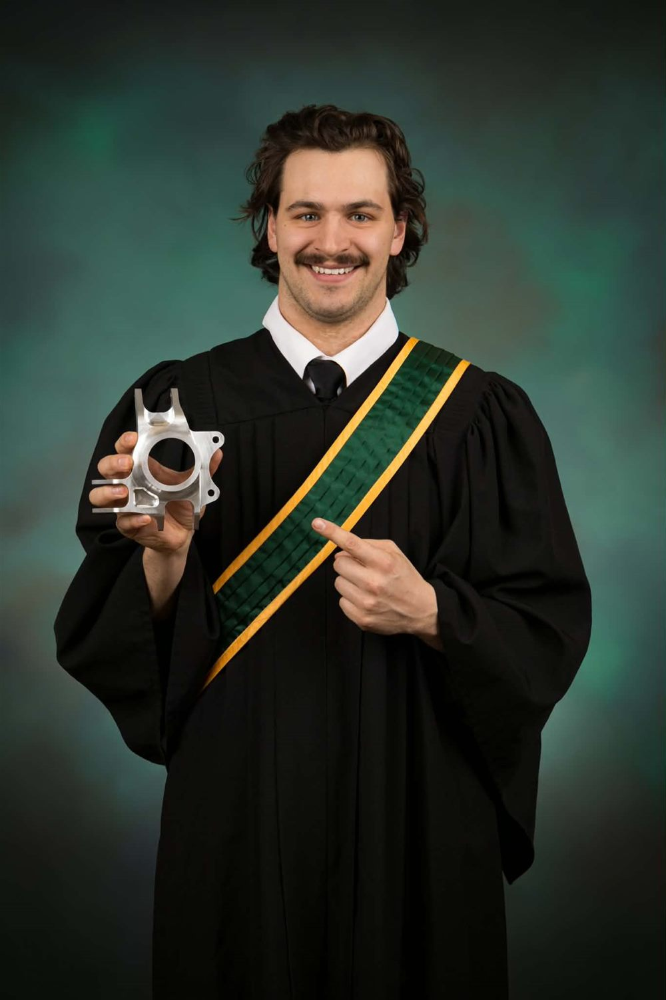

Baja SAE
Suspension & direction
Directeur Suspension et Direction — conception de moyeux, porte-fusées et géométrie de suspension pour le club Baja SAE.
Détails →Génie mécanique
Finissant en génie mécanique à l'Université de Sherbrooke, passionné par la conception de produits mécaniques innovants à impact environnemental positif.
Voir mes projets
Directeur Suspension et Direction — conception de moyeux, porte-fusées et géométrie de suspension pour le club Baja SAE.
Détails →
Projet de fin de bacc pour Skyrenu inc. — conception des sous-systèmes de déshumidification et de remplissage.
Détails →
Vélo cargo, guidon sur mesure, foyer, bibliothèque et plus — soudure et usinage sur mon temps libre.
Détails →Un mélange de mes réalisations en montage vidéo et de sport.
Voir la chaîne →
Je m'appelle Joseph Sauvé, finissant en génie mécanique à l'Université de Sherbrooke. Ma passion réside dans la conception de produits mécaniques innovants ayant un impact environnemental positif.
Au cours de mon parcours, notamment comme directeur suspension et direction pour le club Baja SAE, j'ai développé une solide expertise en conception 3D, en simulation FEA et en fabrication pratique. Ces expériences m'ont permis d'aborder des problèmes complexes avec calme et rigueur, tout en apprenant à transformer des concepts audacieux en réalités fonctionnelles.
Je souhaite aujourd'hui intégrer une organisation qui partage mes valeurs de durabilité et d'innovation pour concevoir des produits qui répondent aux besoins des gens sans encourager la surconsommation. Je cherche à mettre mon talent en prototypage et ma polyvalence technique au profit d'un projet porteur.
Envie de discuter d'un projet ou d'une opportunité ?